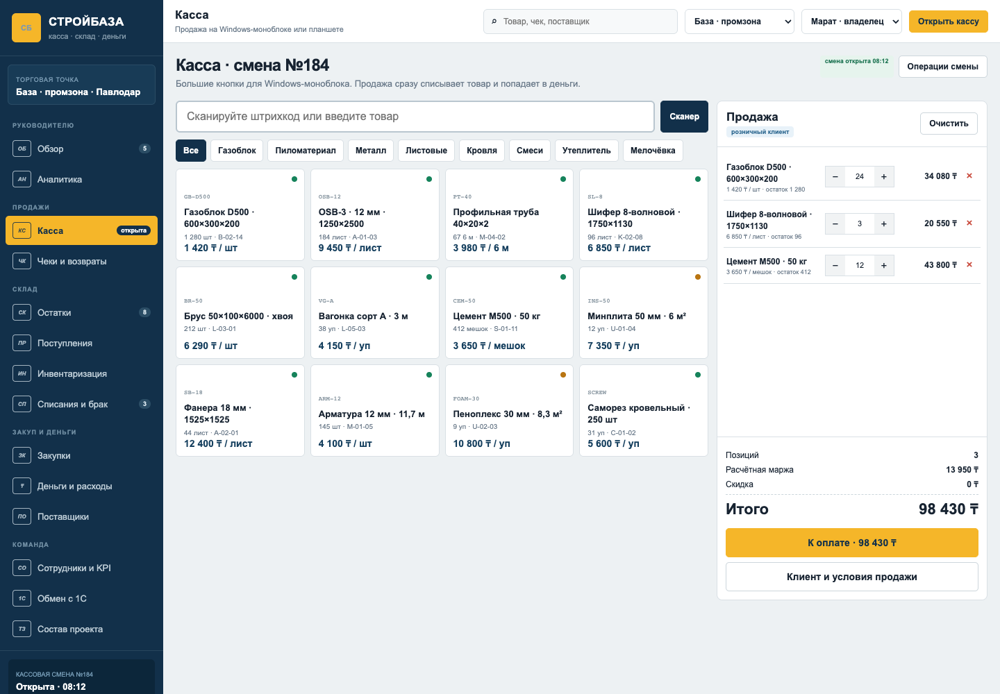
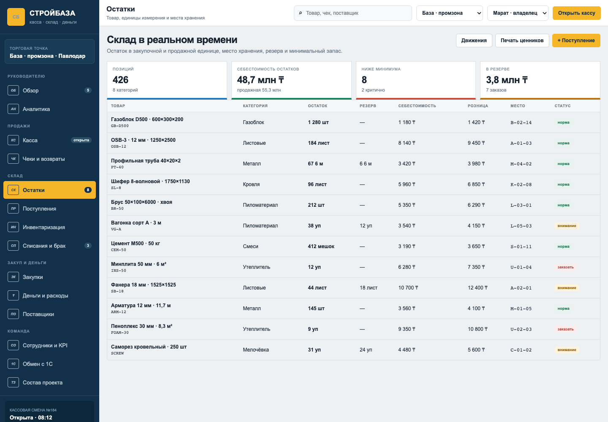

Собственный портал для строительной базы Марата в Павлодаре: рабочая касса на Windows-моноблоке, точные остатки и управленческий результат.
Одна крупная база в промзоне, 2–3 пользователя, около 20 клиентов в день и оборот до 30–50 млн ₸ в месяц. Следующий шаг — управлять остатками и маржой, а не искать ответы в Excel.
Продажа, поступление, резерв, списание и инвентаризация должны менять один складской баланс.
Товар может прийти в м³ или упаковках, а продаваться поштучно, метрами или листами.
После чека товар должен списаться автоматически, а оплата — попасть в дневной денежный отчёт.
Нужны себестоимость, валовая маржа, расходы, закупки, задолженность и итог собственника.
Смены, скидки, возвраты, средний чек, валовая прибыль и точность операций — по сотруднику.
Будущий городской шоурум подключается как вторая точка с отдельными остатками и общим управлением.
01ПоступлениеПоставщик, закупочная цена, партия, единицы, доставка.02СкладМесто, остаток, резерв, минимум, себестоимость.03КассаЧек, скидка, клиент, способ оплаты, продавец.04ДвижениеСписание, возврат, брак, инвентаризация.05РезультатВыручка, себестоимость, маржа, расходы, долг.Каждый показатель раскрывается до исходного чека, партии, поставщика и сотрудника. Никаких «магических» цифр без первичной операции.
Быстрая розничная продажа, наличные, Kaspi/QR, карта, возврат и печать документа.
Карточка клиента, договорная цена, счёт, оплата на расчётный счёт, задолженность и история.
Кассир, точка, стартовая наличность, время и устройство.
журнал сменШтрихкод, артикул, название, категория и быстрые плитки.
USB-сканерКоличество, единица, цена, скидка, клиент, резерв и комментарий.
крупные кнопкиНаличные, Kaspi/QR, банковская карта, расчётный счёт или смешанная оплата.
план / фактПо исходному чеку, причина, товарное движение и возврат денег.
права доступаX/Z-отчёты, сверка наличных, расхождения и подтверждение.
контроль кассыВеб-приложение открывается в полноэкранном режиме Windows. Поддерживаются клавиатура, мышь, сенсорный экран, USB/Bluetooth-сканер и обычный принтер.
Моноблок, сканер, принтер, фискальная ККМ, эквайринг и подписки внешних провайдеров не входят в разработку.

Товары, категории, корзина, количество, сумма, скидка и оплата.
Поиск, категория или сканер.
Розница или условия юрлица.
Способ оплаты и автоматическое списание.

Остаток, резерв, себестоимость, розница, минимум и статус.
Поставщик, документ, закупочная цена, количество, партия, транспортный расход, задолженность и размещение.
Пересчёт по зонам, фактическое количество, расхождение, причина и утверждённая корректировка.
Бой, порча, недостача, внутреннее использование; обязательные причина, фото и ответственный.
Резерв под клиента, снятие резерва и перемещение между базой и будущим шоурумом.
В карточке задаются размеры и коэффициент: объём партии переводится в доступное количество единиц продажи. Остаток можно видеть в обеих единицах.
Для каждой упаковки фиксируется состав. Частичная упаковка учитывается отдельно и не теряется при инвентаризации.
Чеки и оплаты по каналам.
Продажа минус себестоимость.
Маржа минус подтверждённые расходы.
План заказа, заказ поставщику, обещанная дата, приёмка, оплата, задолженность и качество поставки.
Смена, выручка, валовая прибыль, скидки, возвраты, средний чек и точность кассы.
Код, название, единица, ставка, группа и статус.
БонусПоставщики и покупатели, реквизиты и идентификаторы.
БонусСогласованный состав чеков/реализаций и способов оплаты.
После анализаНаправление и частота обмена фиксируются после проверки базы.
После анализаПродажи, оплаты, возвраты, отчёты.
Все ключевые товарные движения.
Управленческий план-факт.
После технического обследования.
Моноблок, сканер, принтер, фискальный регистратор.
ОФД, эквайринг, сервер, SMS и иные подписки.
Только после отдельной оценки.
Остаётся в 1С и у бухгалтера.
Товары, единицы, цены, поставщики, роли, кассовое оборудование, версия 1С и контрольные остатки.
Смена, чек, способы оплаты, складские движения, карточки товаров и конвертация единиц.
Поступления, поставщики, расходы, маржа, задолженность, KPI и согласованный обмен.
Пересчёт, выравнивание остатков, обучение продавцов, тестовые смены и приёмка.
Разработка, настройка, тестирование, обучение, запуск и типовая интеграция с 1С бонусом. Лицензии Pllato нет.
Договор, обследование и старт разработки.
После демонстрации кассы и товарного ядра.
После приёмки системы и передачи в работу.
Касса, склад, поступления, инвентаризация, списания, закупки, деньги, поставщики, сотрудники и 1С.
Excel/1С с товарами, единицами, ценами, поставщиками и контрольными остатками; перечень оборудования кассы.
150 000 ₸ запускают обследование и разработку товарно-кассового ядра.
Открытие смены → поступление → продажа → возврат → расход → сверка → закрытие смены и отчёт собственника.
Контрольный товар проходит полный цикл, остаток и себестоимость сходятся, оплаты отражаются по способам, смена закрывается, а собственник видит выручку, валовую прибыль и подтверждённые расходы.